Qiang Zhang1 Qiangqiang Yuan2 Jie Li2 Yuan Wang2 Fujun Sun2 Liangpei Zhang1
1State Key Laboratory of Information Engineering, Survey Mapping and Remote Sensing, Wuhan Univeristy
2School of Geodesy and Geomatics, Wuhan Univeristy
| 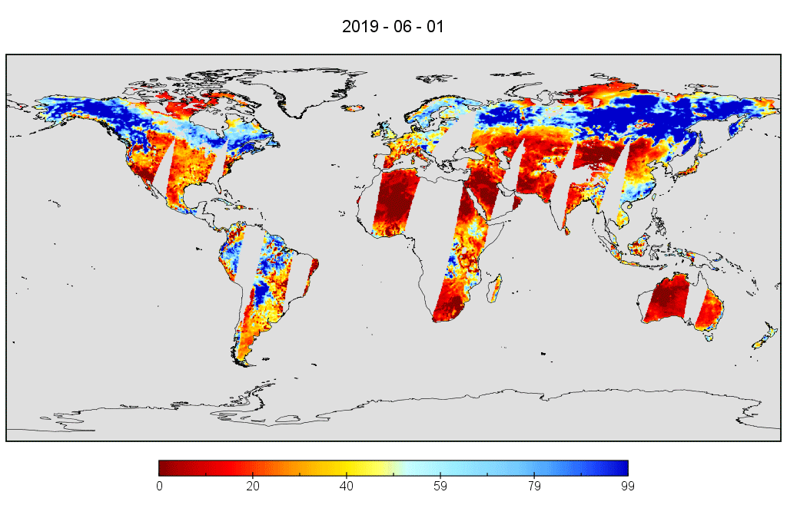 | 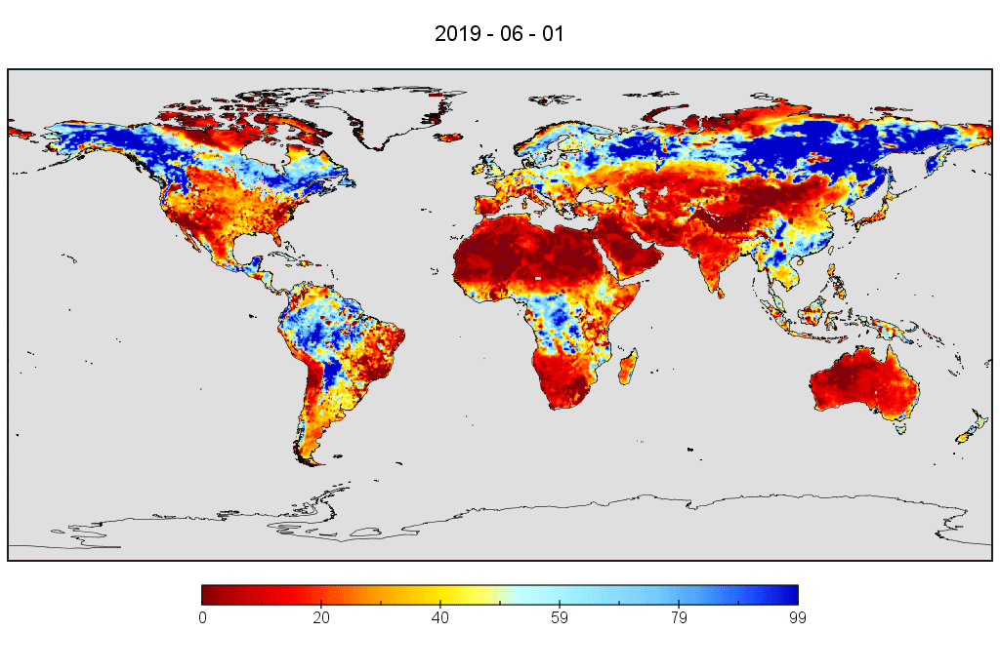 | |
| (a) Original | (b) Reconstructed | |
Fig. 1. Original/Reconstructed AMSR2 Global Daily 0.25° Soil Moisture Time-series Productions
Dataset Download
|
SGD-Soil Moisture Productions (2013-2019) Link 1: [Baidu Yun] (Extracting Code: fu8f) Link 2: [Google Drive] Link 3: [Zenodo] Related Codes: [GitHub] |
Experimental Results
|
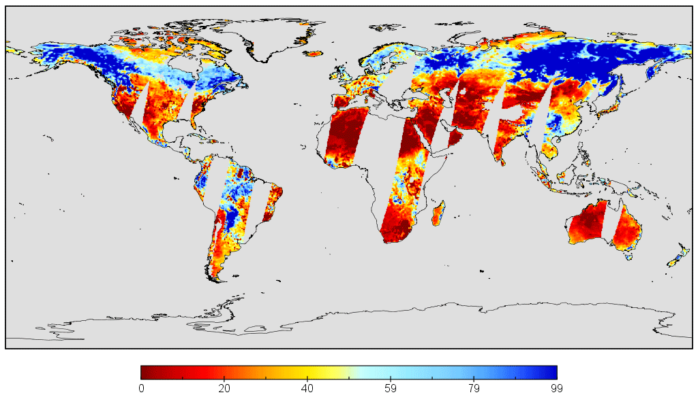 | 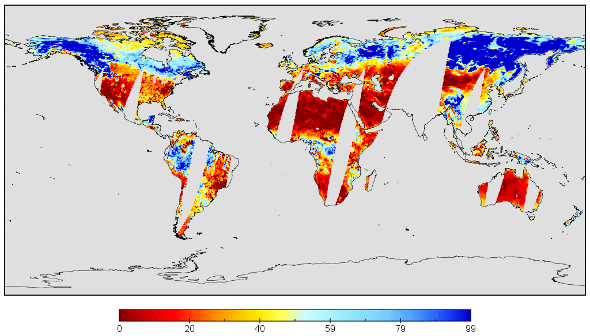 |
| (a) 2019.06.01 | (b) 2019.06.15 | (c) 2019.06.30 |
Fig. 2. Original/reconstructing global daily SM results in June, 2019
| 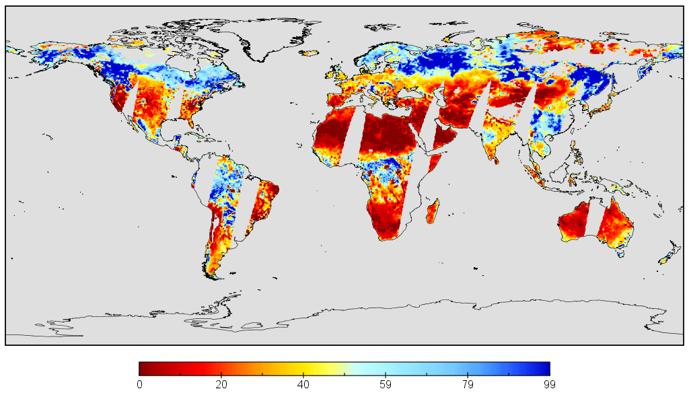 | 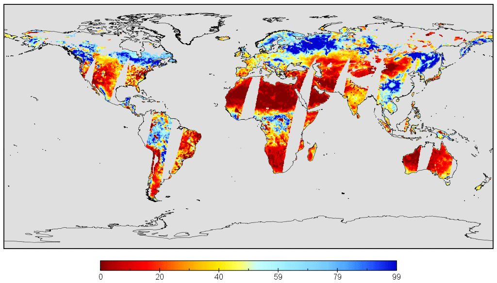 | 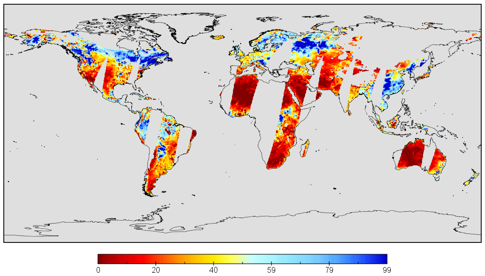 |
| (a) 2016.10.01 | (b) 2016.10.15 | (c) 2016.10.30 |
Fig. 3. Original/reconstructing global daily SM results in October, 2016
| 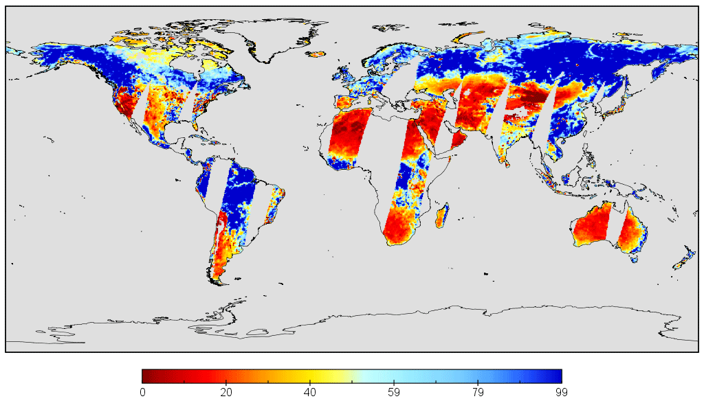 | 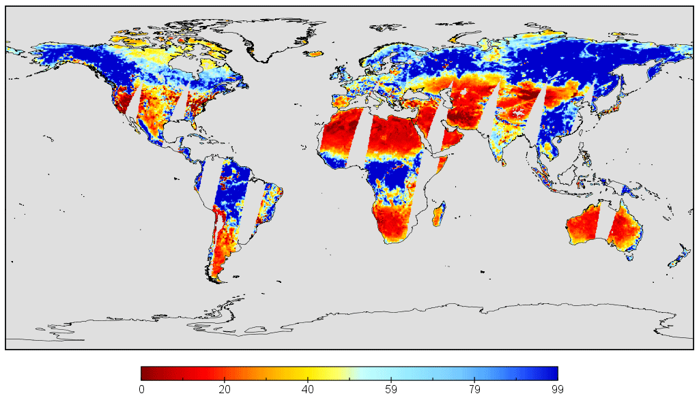 | 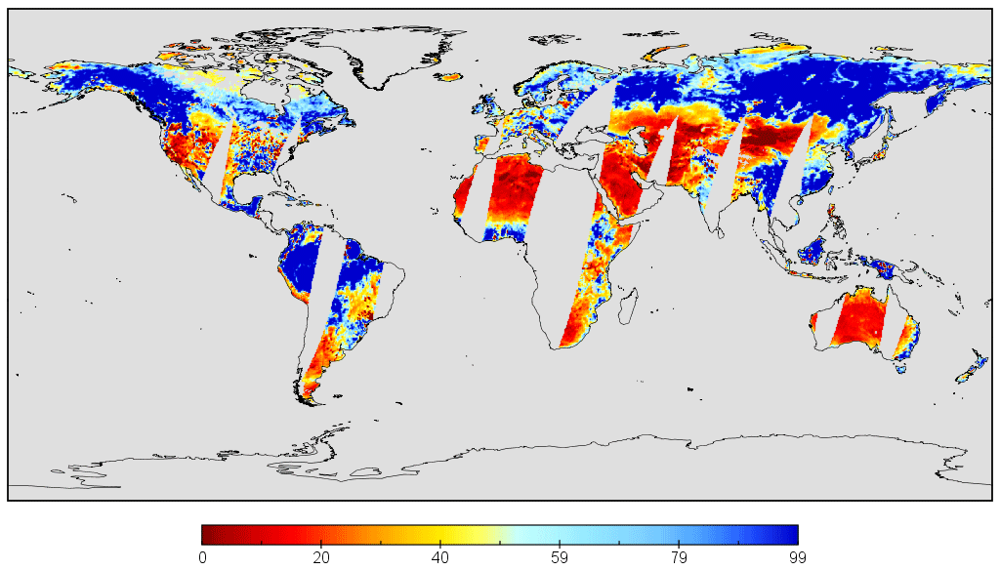 |
| (a) 2013.08.01 | (b) 2013.08.15 | (c) 2013.08.30 |
Fig. 4. Original/reconstructing global daily SM results in August, 2013
Validation Results
1) In-situ validation:
| 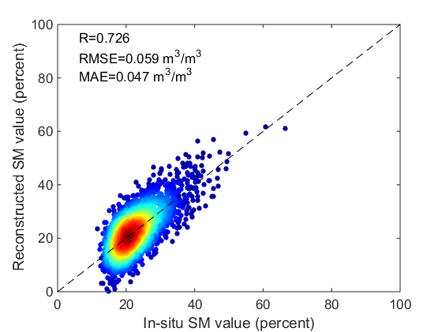 | 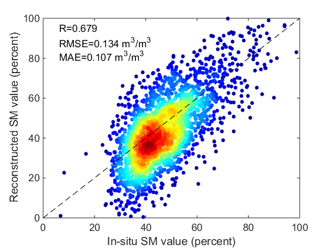 | 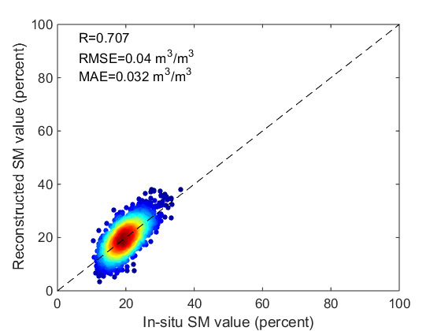 |
| (a) COSMOS-026 | (b) COSMOS-055 | (c) COSMOS-098 |
| 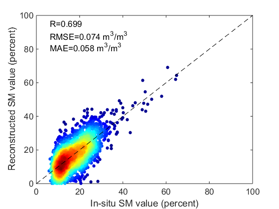 | 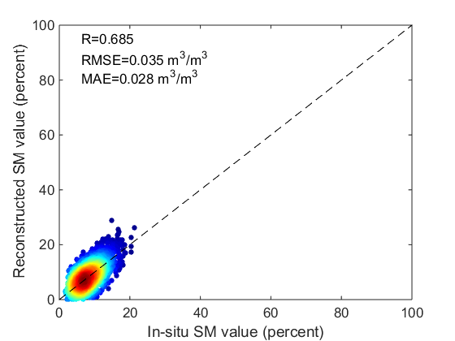 | 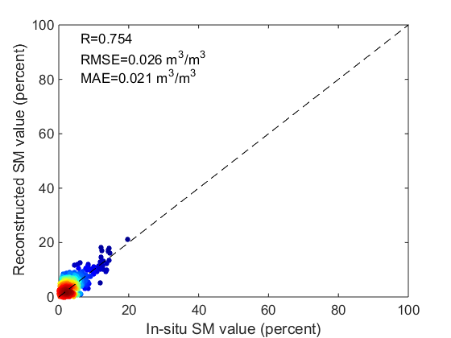 |
| (d) COSMOS-044 | (e) COSMOS-033 | (f) COSMOS-076 |
| 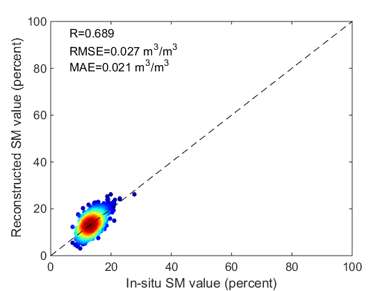 | 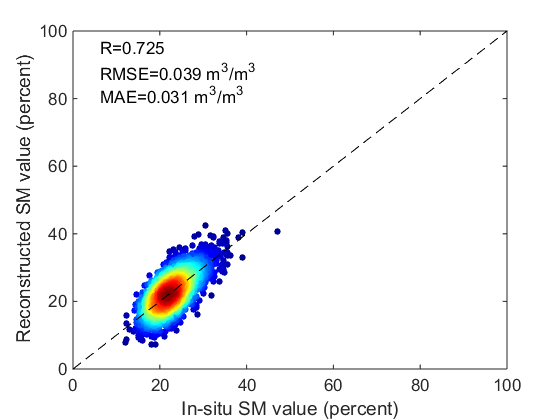 |  |
| (g) COSMOS-087 | (h) COSMOS-048 | (i) COSMOS-012 |
Fig. 5. Scatters of the in-situ/reconstructed soil moisture values in selected in-situ stations
| SM Productions | Evaluation Index | ||
| R | RMSE | MAE | |
| Original | 0.687 | 0.095 | 0.078 |
| Reconstructed | 0.683 | 0.099 | 0.081 |
2) Time-series validation:
| 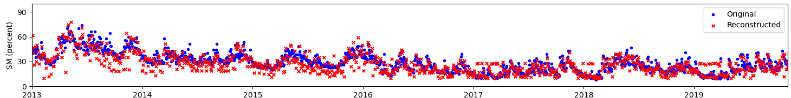 |
| (a) Time-series results in Africa (0.375°N, 36.875°E) |
| 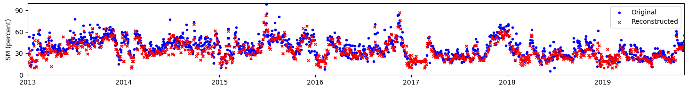 |
| (b) Time-series results in Europe (49.375°N, 35.125°E) |
| 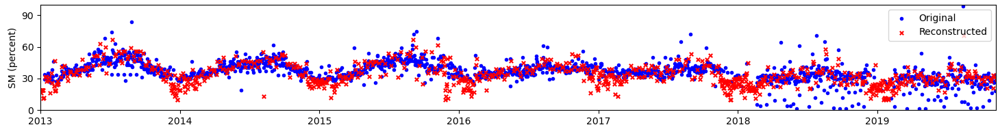 |
| (c) Time-series results in Asia (38.125°N, 117.375°E) |
| 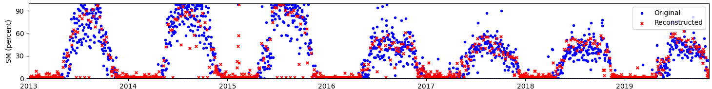 |
| (d) Time-series results in North America (39.875°N, 106.125°W) |
| 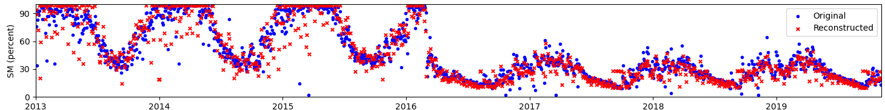 |
| (e) Time-series results in South America (15.125°S, 52.625°W) |
| 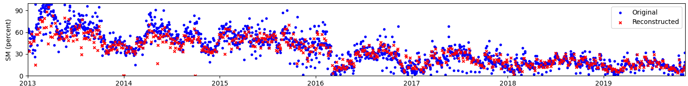 |
| (f) Time-series results in Australia (30.125°S, 150.375°E) |
Fig. 6. Scatters of the in-situ/reconstructed soil moisture values in selected in-situ stations
3) Simulated missing regions validation:
| 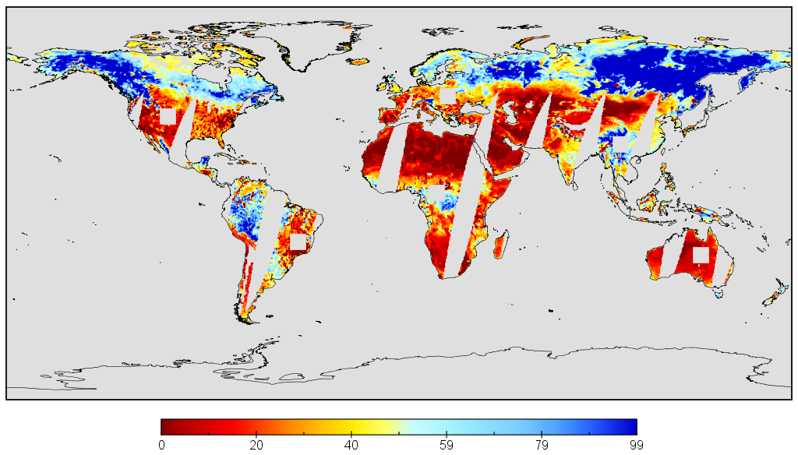 | 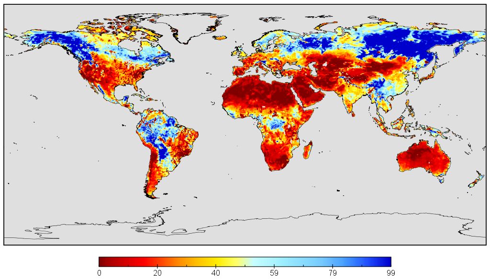 | |
| (a) Original result with simulated missing regions (square regions) | (b) Reconstructed | |
Fig. 7. Original and reconstructed results with simulated missing regions in 2019.7.25
| 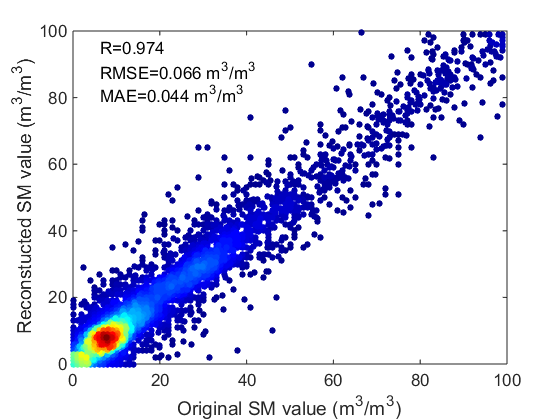 | 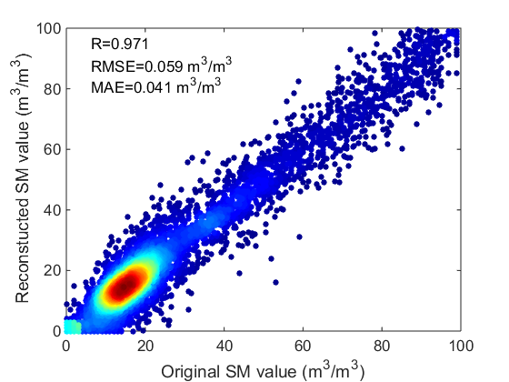 | 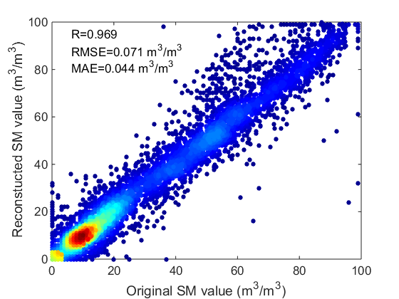 |
| (a) Scatter of simulated regions in 2013.7.25 | (b) Scatter of simulated regions in 2015.7.25 | (c) Scatter of simulated regions in 2017.7.25 |
Fig. 8. Original-reconstructed scatters of simulated regions in 2013, 2015, and 2017.7.25